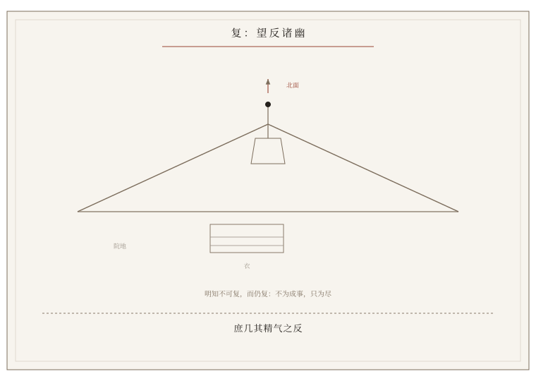

檀弓下 · 四·十五 · 第 340 课
复，尽爱之道也，有祷祠之心焉。望反诸幽，求诸鬼神之道也。北面，求诸幽之义也。
说什么事：复（招魂）是尽爱亲之道的最后一举，其中含着祷祠求神的心。望其从幽处归来，是求诸鬼神之道；面朝北方，是取「幽」之义。
落在哪一层：以「尽」量礼。论「明知无用而仍做」的一类礼。
为何编在此位：上节立「节哀」之纲，此节为其第一目。丧仪自复始：人始死，先复。
【经】復，盡愛之道也，有禱祠之心焉。望反諸幽，求諸鬼神之道也。北面，求諸幽之義也。
【注】复谓招魂，且分祷五祀，庶几其精气之反。／鬼神处幽暗，望其从鬼神所来。／乡其所从来也。《礼》复者升屋北面。
【疏】始死招魂复魄者，尽此孝子爱亲之道也。非直招魂，又分祷五祀，冀精气之复反。／言招魂之时，於平生馆舍求魂欲反，又於五祀祷请求之，复与五祀，总是祈祷。／又解复魄之时，冀望魂神於幽处而来，所以望诸幽者，求诸鬼神之道也。言鬼神处在幽暗，故望幽以求之。又解望幽所在，北方是幽暗，复者北面，求鬼神之义。／「招魂」者，是六国以来之言，故《楚辞》有《招魂》之篇，《礼》则云「复，冀精气反复於身形」。／「分祷五祀」者，《既夕礼》文。直言乃行祷者，谓非直招魂，兼有分祷。五祀，博言之耳，士唯二祀。
复 招魂。人始死，使人登屋北面呼其名，冀其精气复归。
尽爱之道 竭尽爱亲之道。尽者，竭也，非止也。
祷祠 祈祷祭祀。分祷五祀，遣人分祭门户、中霤、灶、行诸神。
望反诸幽 望其自幽暗处返回。「反」同返。
北面 面朝北。北方为幽暗之方。
庶几 或许，表希冀。
士唯二祀 士所当祀者只二，五祀乃博言之。
复（招魂）这件事，是竭尽爱亲之道，其中含着一片祷祠求神的心。望着他从幽暗处回来，这是求诸鬼神之道。面朝北方，是取「幽」之义。
此章专解一礼：复。解三事：复之义（尽爱）、复之心（祷祠）、复之向（北面）。
三解皆扣一个「幽」字。魂去于幽，故望于幽；幽在于北，故面于北。举一动作，而其所向、所望、所求，皆在其中。
古礼之精，多在此类：动作本身即是道理，不必另加解释。
第一层 明知其不可，而仍行之 人死不可复生，招魂必不可得。此为常识。
礼偏要行此必不可得之事，且称之为「尽爱之道」。此中有一层极深的意思：礼有时不为成事，只为「尽」。
「尽」不是「成」。事不能成，而心不可不尽。故礼许人做无用之事，只要这无用之事是爱的形状。
第二层 「有祷祠之心焉」：礼与巫之别 复近于巫：登屋呼名、分祷五祀，形皆似巫。
而经下一「心」字，把二者分开：巫求其必验，礼存其心而已。注「庶几其精气之反」，「庶几」二字最要紧——或许，非必然。
礼可以借巫之事，不可以有巫之心。此一线，后世丧仪多已越之。
第三层 北面：方向也是礼 「北面」看似小节，而注疏皆郑重解之：鬼神处幽暗，北方为幽暗之方，故面北以求。
方向在此不是方位，是义。中国之礼，方向多载义：南面为君，北面为臣，东为生，西为死。复者北面，是把生者之面转向死之方。
第四层 疏的考辨：招魂之名后起 疏云「招魂是六国以来之言」，礼经只作「复」，训为「冀精气反复于身形」。
一名之易，见一义之变：礼之「复」是「望其自反」，楚辞之「招魂」是「呼之使来」。前者退让，后者强求。同为一事，气象已别。
第五层 今日之用：为人做无用之事 今人处事，讲究「有用」。探病、送别、守夜、周年祭，皆属「无用」。
此节不劝人做有用之事，只说明：有一类事，其价值不在其效，在其「是爱的形状」。做了，未必有结果；不做，则心有所不尽。
与今日何干 今日多有「明知无益而仍往」之事：临终守候、远道奔丧、为亡者整理旧物。旁人常以「无用」相劝。此节所记，是古人对这类事的定性：不叫无用，叫「尽」。
| 左 | 右 |
|---|---|
| 复 | 招魂，冀精气复反 |
| 尽爱之道 | 竭爱，非求成 |
| 祷祠之心 | 存其心，不求其验 |
| 庶几 | 或许，非必然 |
| 望反诸幽 | 望其自幽处归 |
| 北面 | 取幽之义 |
| 五祀 | 博言之，士唯二祀 |
| 招魂 | 六国以来之名 |
画一处屋脊之上，视点自下仰视。屋脊一线横过画面上方，脊上立一人背影，衣袂被风抬起，面朝画外上方（不画人面）。屋下留一大片空白的院地，地上有一件叠好的衣，衣上不置人物。夜空不放星月，只留墨色渐暗。赭色只用在脊上那人的衣带。
